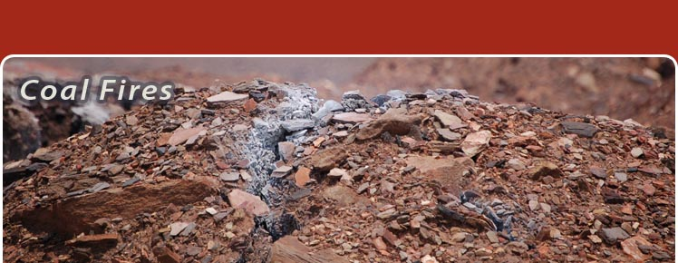

About Coal Fires
Coal Fires in India
Coal Fires in China
Photo Gallery
Public Interest
FAQ
Links
General FAQ
China FAQ
India FAQ
Frequently Asked Questions on Coal Fires
Recently, the issues of coal fires has gained worldwide attention and interest. Here are some frequently asked questions related to this topic.
General questions
What are coal fires?
What do coal fires look like?
Is the occurrence of coal fires actually a global problem?
What causes the coal reserves to start burning?
What dangers/ hazards do these fires pose?
Coal fires in Northern China
Where in China do coal fires occur?
What is the magnitude of damage caused by these coal fires in terms of the amount of coal burnt and amount of CO2 released?
About how much (in dollars) would you estimate it will cost to put out all the fires?
Can all these fires be put out in one go? Is this even a goal?
How much progress has been made in coal fire projects in China?
Are you developing new techniques for fighting the fires appropriate to the local environment and limited money available in China?
What next steps need to be taken to deal with the problem?
Why is it that in the past the problem of coal fires in China received such little attention compared to other environmental problems?
Coal fires in the Jharia Coalfield, India
How would you compare the JCFs to the coalfields in China?
How old is the coal mining history in the JCF and who operates the coalmines there?
How much coal is being burnt by the coal fires in the JCF and how much CO2 is emitted from these coal fires?
One often reads that the JCF contains the "prime coking coal reserves" of the country. What exactly is coking coal?
Copyright © 2007 Anupma Prakash. All rights reserved.
Contact: Homepage of
Anupma Prakash